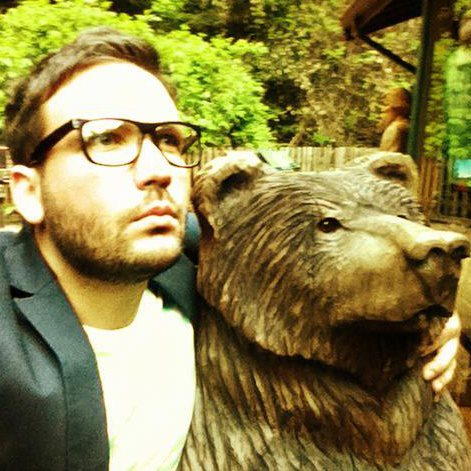

Staff UX Researcher and Cognitive Neuroscientist with a track record of shaping product strategy, hardware usability, and human-AI interaction for flagship wearable and AI ecosystems at Meta Reality Labs and Google. Combines deep experimental rigor with modern AI tooling—building deterministic analysis pipelines, scalable feedback synthesis, and telemetry-joined insights engines. Adept at partnering with design and engineering teams to translate complex quantitative and qualitative signals into compelling narratives, interactive dashboards, and strategic tools that guide executive decisions from early concept through large-scale deployment.
Comprehensive pre- and post-launch research strategy for consumer hardware portfolios. Experienced in evaluating wearability, optics, heuristics, and OOBE/NUX workflows across large-scale field studies and internal dogfooding programs.
Designing autonomous agentic workflows, reproducible analysis pipelines, and context-aware intelligence tools that join multi-channel user feedback with product telemetry to automate launch readiness metrics.
Proficient in frequentist and Bayesian statistics, multivariate inference, MaxDiff, and Choice-Based Conjoint (CBC). Skilled at triangulating datasets at scales ranging from n < 10 deep qualitative studies to n > 40k quantitative surveys.
Deep expertise in electroencephalography (EEG/ERP), eye-tracking, and cognitive-behavioral testing, specializing in attentional control, working memory, and visual distraction in human performance.
Proven track record of managing research functions, building durable insights engines aligned with company-level OKRs, and mentoring IC researchers across engineering, industrial design, and product management.
2019 - 2024
2017
2014 - 2016